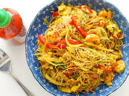

Signapore Noodles

Description
Here is a slightly spicy curry dish of Singapore angel hair noodles with a medley of veggies, shrimp, chicken, and pork. It's an Asian way to clear out the fridge. Serve noodles with hot pepper sauce and soy sauce as condiments.
Ingredients
- 1lb Dry Vermicelli Pasta
- 2 Skinless, Boneless Chicken Strips
- 2 Butterfly Pork Chops
- 2 Cloves Garlic
- 3 Tablespoons of Vegetable Oil
- Half an Onion
- 2 Carrots
- 2 Stalks of Celery
- 12 ounces of shrimp
- 1 Cup Bean Sprouts
- 3 Tablespoons of Yellow Curry Powder
- Quarter Cup of Water
Steps
- Bring a large pot of lightly salted water to a boil. Add pasta and cook until al dente, 8 to 10 minutes; drain.
- Heat oil in a deep skillet or fry pan over medium-high heat. Add chicken, pork, and garlic; cook until browned.
- Reduce heat to medium-low. Add onion, carrots, and water; cover and steam for 5 minutes. Stir in celery and shrimp; cover and steam for 2 minutes.
- Mix in bean sprouts, soy sauce, and curry powder; stir together until blended and hot, 4 to 5 minutes.
- Add noodles to the skillet; toss well.